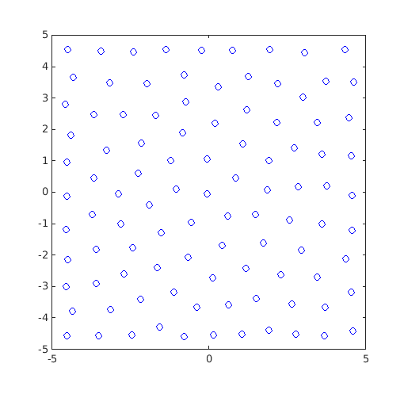
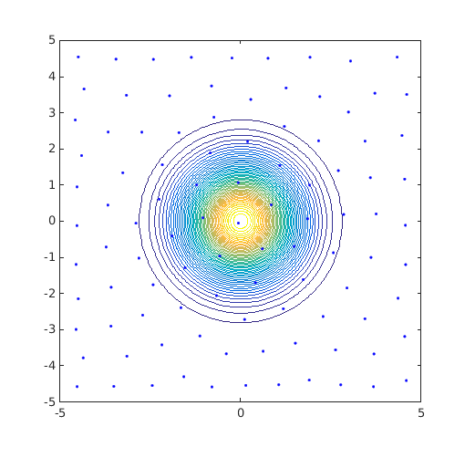
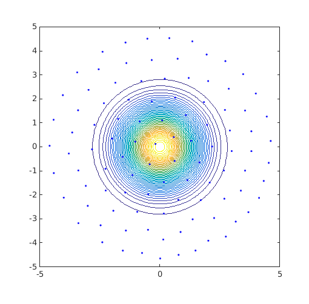
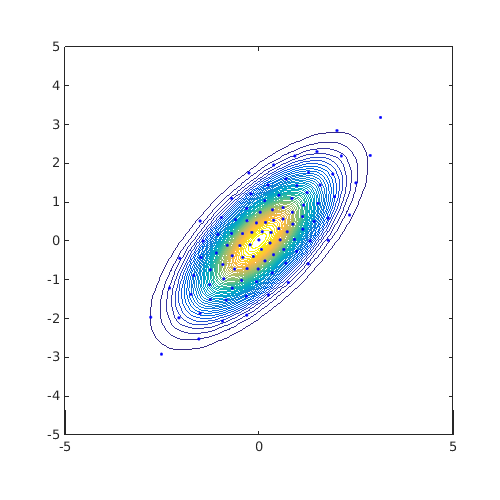
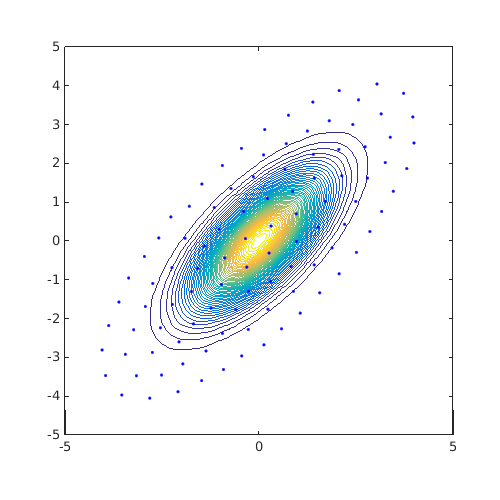
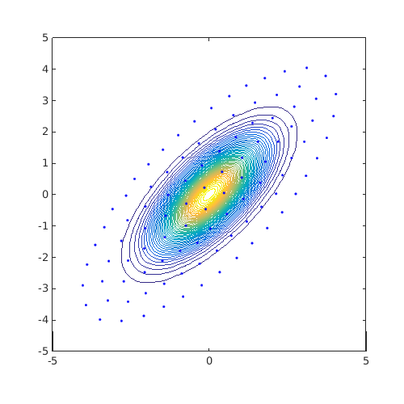

Examples / Adaptive sampling / cvt
This file is a complete demo of the capability of the cvt function from the CODES toolbox.
Contents
Documentation
The documentation for the cvt function can be found here.
Set rng
Set random number generator seed:
rng(0)
Simple example
Build a simple CVT DOE within a square of side length 10 centered on the origin:
DOE=CODES.sampling.cvt(100,2,'lb',[-5 -5],'ub',[5 5]); figure('Position',[200 200 500 500]) plot(DOE(:,1),DOE(:,2),'bo') axis square axis([-5 5 -5 5])
Restricted DOE
Observe the previous DOE overlayed with a normal distribution:
JPDF=@(x)mvnpdf(x,[0 0],[1 0;0 1]); [X,Y]=meshgrid(linspace(-5,5,100)); Z=reshape(JPDF([X(:) Y(:)]),100,100); figure('Position',[200 200 500 500]) contour(X,Y,Z,50) hold on plot(DOE(:,1),DOE(:,2),'b.') axis square axis([-5 5 -5 5])
A better DOE would be to have CVT samples restricted within a circle:
DOE=CODES.sampling.cvt(100,2,'lb',[-5 -5],'ub',[5 5],'region',@(x)5-pdist2(x,[0 0])); figure('Position',[200 200 500 500]) contour(X,Y,Z,50) hold on plot(DOE(:,1),DOE(:,2),'b.') axis square axis([-5 5 -5 5])
Sum of square change at iteration 1: 4.837e-03 Sum of square change at iteration 2: 2.711e-03 Sum of square change at iteration 3: 1.701e-03; Predicted relative change : 2.260e-01 Sum of square change at iteration 4: 9.493e-04; Predicted relative change : 2.083e-01 Sum of square change at iteration 5: 6.000e-04; Predicted relative change : 1.363e-01 Sum of square change at iteration 6: 3.923e-04; Predicted relative change : 8.108e-02 Sum of square change at iteration 7: 2.986e-04; Predicted relative change : 1.211e-25 Sum of square change at iteration 8: 2.412e-04; Predicted relative change : 6.006e-14 Sum of square change at iteration 9: 1.981e-04; Predicted relative change : 3.152e-58
Distribution tailored DOE
The previous example relied on previous knowledge for the definition of the region. Another idea is to use isovalues of the target distribution as the region boundary. For example, consider a correlated Gaussian example as follows:
JPDF=@(x)mvnpdf(x,[0 0],[1 0.7;0.7 1]); ndummies=mvnrnd([0 0],[1 0.7;0.7 1],1e5); [X,Y]=meshgrid(linspace(-5,5,100)); Z=reshape(JPDF([X(:) Y(:)]),100,100); tic; DOE=CODES.sampling.cvt(100,2,'lb',[-5 -5],'ub',[5 5],... 'dummies',ndummies,'display',false); disp(['Time to find CVT with prescribed dummies : ' CODES.common.time(toc)]) tic; DOE1=CODES.sampling.cvt(100,2,'lb',[-5 -5],'ub',[5 5],... 'dummies',ndummies,'kmeans',true); disp(['Time to find CVT with prescribed dummies and matlab built-in kmeans : ' CODES.common.time(toc)]) tic; DOE2=CODES.sampling.cvt(100,2,'lb',[-5 -5],'ub',[5 5],... 'region',@(x)JPDF(x)-JPDF([4 4]),'display',false); disp(['Time to find CVT with shuffled Halton dummies : ' CODES.common.time(toc)]) tic; DOE3=CODES.sampling.cvt(100,2,'lb',[-5 -5],'ub',[5 5],... 'region',@(x)JPDF(x)-JPDF([4 4]),'kmeans',true); disp(['Time to find CVT with matlab built-in kmeans : ' CODES.common.time(toc)]) figure('Position',[200 200 500 500]) contour(X,Y,Z,50) hold on plot(DOE(:,1),DOE(:,2),'b.') axis square axis([-5 5 -5 5]) figure('Position',[200 200 500 500]) contour(X,Y,Z,50) hold on plot(DOE1(:,1),DOE1(:,2),'b.') axis square axis([-5 5 -5 5]) figure('Position',[200 200 500 500]) contour(X,Y,Z,50) hold on plot(DOE2(:,1),DOE2(:,2),'b.') axis square axis([-5 5 -5 5]) figure('Position',[200 200 500 500]) contour(X,Y,Z,50) hold on plot(DOE3(:,1),DOE3(:,2),'b.') axis square axis([-5 5 -5 5])
Time to find CVT with prescribed dummies : 4s Warning: Failed to converge in 100 iterations. Time to find CVT with prescribed dummies and matlab built-in kmeans : 11s Time to find CVT with shuffled Halton dummies : 5s Warning: Failed to converge in 100 iterations. Time to find CVT with matlab built-in kmeans : 12s  
Copyright © 2015 Computational Optimal Design of Engineering Systems (CODES) Laboratory. University of Arizona.
|
|
Computational Optimal Design of Engineering Systems |

|